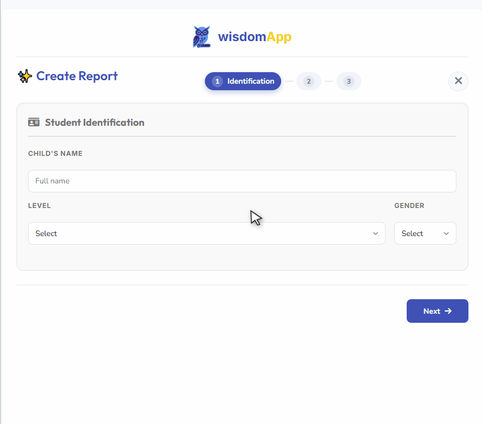

Every project below solves a problem I actually had — in my own classroom, my own dissertation, or my own city. None started as a portfolio piece.
SPEC. 001 — SAAS / EDTECH
SabedorIA
appsabedoria.com.br
A report-generation platform that helps teachers write BNCC-aligned student assessments faster. Built a descriptor bank of ~190 curriculum-aligned phrases across 8 categories, with a click-to-cycle chip interface for scoring student progress — AI drafts, the teacher decides.

- Stack
- Next.js, Firebase, Vercel
- Status
- Live, in production use
- My role
- Product design + full build, via AI pair-programming
SPEC. 002 — SAAS / LOCAL COMMERCE
barbearIA
Booking & retention platform, barbershops and salons
Built for small barbershops and salons in the Baixada Fluminense: booking, Pix payments via webhook, scaling toward an autonomous WhatsApp bot that handles rebooking and retention on its own — running on a self-hosted, near-zero-cost stack.
- Stack
- Next.js, Firestore, Evolution API
- Status
- In development, scaling scope
- Constraint
- Designed to run on free-tier infrastructure
SPEC. 003 — EDTECH / ADAPTIVE ASSESSMENT
Simulados engine
Started as a tool to help my own son study
An engine that generates practice exams (simulados) tuned to a student's actual gaps, born out of a very specific problem: helping my son perform better in school. Now evolving — undecided yet whether it becomes a standalone product or a module inside SabedorIA.
- Origin
- Built for a real student — my son
- Status
- Active, early-stage
- Open question
- Standalone product vs. SabedorIA module
SPEC. 004 — RESEARCH TOOLING
Autonomous analysis-and-writing pipeline
Built for my own M.Sc. dissertation
An end-to-end flow that takes raw survey data (ROSE-adapted Likert scale, N=13) through Wilcoxon signed-rank testing and rank-biserial correlation, then into qualitative coding against the Sasseron & Carvalho scientific-literacy indicators — with AI assisting analysis and academic writing at every stage.
- Method
- Mixed quant/qual, validated instruments
- Status
- Used to complete dissertation analysis
- Why it matters
- Real statistical rigor, not AI hand-waving
SPEC. 005 — EDUCATIONAL ROBOTICS
Meninas nas Exatas — micro:bit workshops
github.com/bjnobrega/oficinas-robotica-microbit
Four hands-on BBC micro:bit workshops — magnetometry, thermal data logging, solar circuits, and water-rocket telemetry — designed for an all-girls research cohort to break gender barriers in STEM. Published as a full pedagogical e-book with open-sourced materials.
- Audience
- Public-school girls, ages 15–17
- Format
- Printable A4 workshops + open GitHub repo
- Status
- Field-tested in person, at CIEP/UFRJ